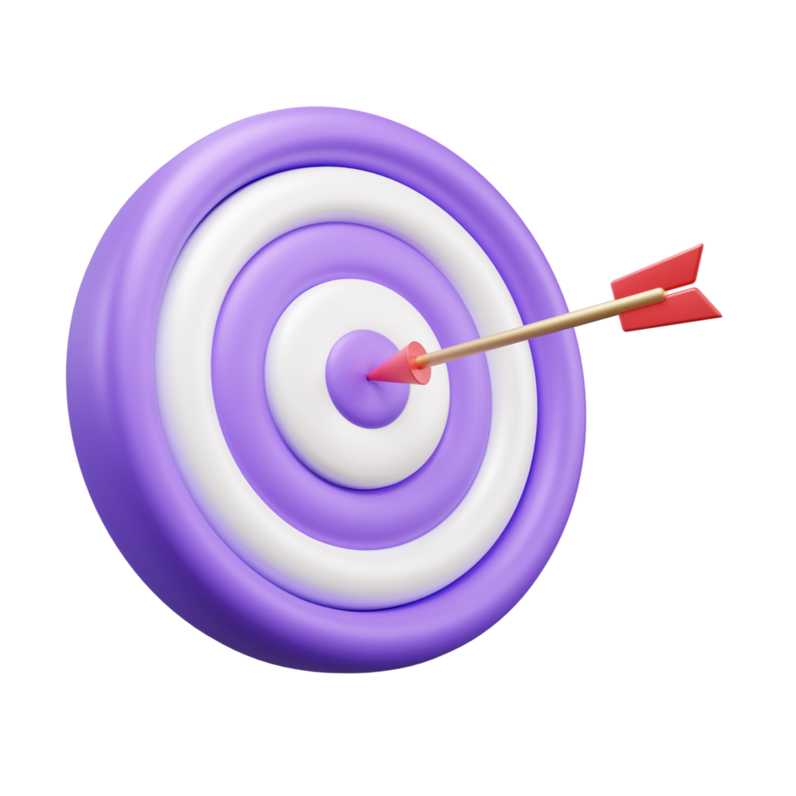

Իմ Կոֆֆե Հաուսի աշխատանքի դիմումը կլինի դրական, թե ոչ ես միևնույն է չեմ կորցնում իմ հույսը, ինձ իմ ընկերները ասում էին իմաստ
չունես դիմելու, քանի որ` աշխատանքի չեն ընդունի, կարծես կոտրում էին
իմ նպատակը, բայց ես նրանց կապացեմ հակառակը, և խորհուրդ եմ տասլիս բոլորին երբեք մի
մտահոգվեք ուրիշների մեկնաբանություններով, այլ լսեք ձեր սրտին` և այս պարագայում ձեր սրտի Կոֆֆե Հաուսին:
Ամենահզոր սուրճի կազմակերպությունն է՞ Հայաստանում
Աշխատավարձը միջինից բարձր է